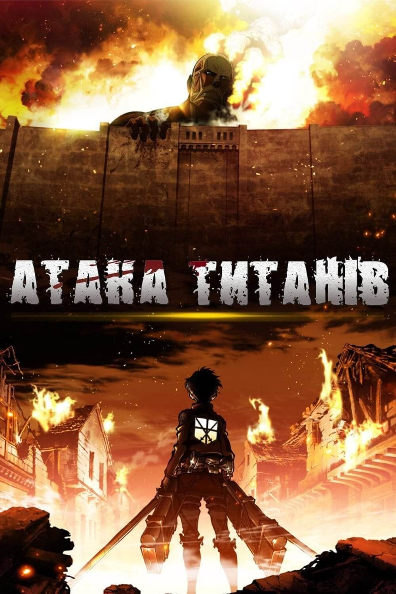

Століття тому, на Землі сталося те, чого найбільше боялося людство.
Нізвідки з'явилися гіганти, вони мали великий зріст, але були
бездумними. Величезних істот нарекли титанами. Вони трощили все, що
траплялося на їхньому шляху, а на сніданок харчувалися людьми, які
відчайдушно захищалися, вступаючи з ними в протистояння. Але всі
спроби подолати людожерів виявилися марними. Титанів не могла знищити
жодна високотехнологічна зброя XIX століття і ті, кому вдалося дивом
вижити, вирішили звести три величезні стіни. Будівлі вийшли
високоміцні та мали колосальну висоту. Монстри не могли пробитися
крізь каміння та перелізти через огорожі. Незабаром люди заспокоїлися
і почали вести мирне існування. Заради безпеки, населенням було
створено спеціальний Легіон Розвідки, до якого відбиралися лише
найкращі війни. Але солдати цілими днями лише байдикували і грали в
кості, навіть не думаючи про битви, поки в їхніх лавах не з'явився
Ерен Єгер — син вченого, який зробив для міста чимало добрих справ.
Хлопець не розумів, чому захисники сидять без діла, і не хочуть
розчищати території від монстрів, щоб назавжди покінчити із
ув'язненням, яке робить їх схожими на худобу.